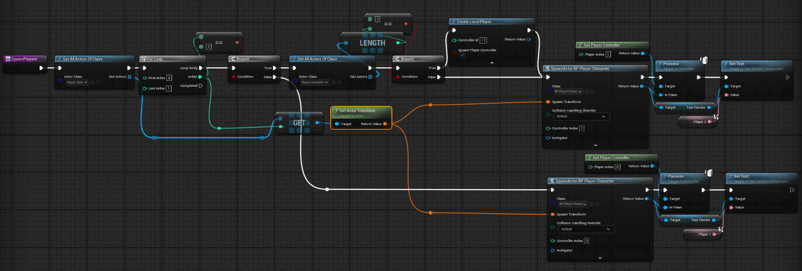

Game Overview
Developed during a 5-day game jam in Unreal Engine 5, Fool Me Once is a competitive local multiplayer maze duel built for physical Dance Dance Revolution (DDR) dance pads. Two players navigate a space station in splitscreen, racing to collect cakes and deploying unpredictable power-ups and traps to disorient each other.
Core Technical Implementation
1. Node-Based Navigation & Dot-Product Direction Validation
Instead of standard physics and continuous Character Movement
components, we built a responsive, deterministic
grid navigation system using custom
AMovementNode actors:
-
Dot-Product Direction Validation: When a player
inputs a move or turn command, the character calculates the vector
dot product between its facing direction and all connected nodes,
confirming valid moves within a 45° forward cone (
ForwardVectorMatchThreshold = 0.707f). -
Look-Ahead Corner Smoothing: To eliminate sudden
stops at 90-degree turns, the system checks ahead for the next
connected corridor (
NextForwardNode). While moving toward its current node, the pawn smoothly blends its rotation (TargetForwardRotation) into the upcoming corner using an easing curve. -
Quaternion SLERP Interpolation: Rotations use
spherical linear interpolation (
FQuat::Slerp) alongside custom easing curves (InterpEaseInOut) to keep camera and character turning smooth and predictable.
2. Automated Ground-Snapping Level Tool
Because the player pawn moves between node origins by targeting its
center pivot, movement nodes must sit at the exact half-height of the
character capsule. To eliminate manual height adjustments across
uneven maze geometry, each
AMovementNode aligns itself automatically on startup:
-
Downward Ground Trace: During
BeginPlay(), the node fires a downward line trace on theECC_Visibilitycollision channel. -
Automatic Height Offset: When it hits walkable
floor geometry, the node snaps its position to
Hit.Location.Z + 102.15f(the exact capsule center offset), guaranteeing clean ground clearance without manual placement errors.
// Automatic vertical raycast alignment for graph nodes
void AMovementNode::BeginPlay()
{
Super::BeginPlay();
FHitResult Hit;
FVector Start = GetActorLocation();
FVector End = Start - FVector(0.f, 0.f, 10000.f);
FCollisionQueryParams Params;
// Raycast down to find floor surface and offset to character capsule center
if (GetWorld()->LineTraceSingleByChannel(Hit, Start, End, ECC_Visibility, Params))
{
const float CapsuleCenterOffset = 102.15f; // Character pivot / half-height
FVector NewLocation = GetActorLocation();
NewLocation.Z = Hit.Location.Z + CapsuleCenterOffset;
SetActorLocation(NewLocation);
}
}3. Data-Driven Item Spawning & Count Synchronization
Collectibles and power-ups are managed centrally by
ACakeChaseGameMode
to ensure fair, collision-free spawning across open gameplay nodes:
-
Configurable Spawn Rules: Uses a structured
configuration array (
FPowerUpSpawnConfig) to control spawn intervals, probabilities, max active limits, and actor classes. -
Anti-Overlap Sphere Checks: Before spawning an
item, the GameMode performs a spherical overlap query (
SphereOverlapActorscheckingWorldStatic,WorldDynamic,Pawn, andPhysicsBody) to filter out occupied nodes. -
Active Count Synchronization: Runs periodic world
checks (
UpdateActualCakeCount,UpdateActualPowerUpCounts) to keep active item limits in sync, even when pickups are collected or destroyed asynchronously.
// Multi-channel spatial anti-overlap validation for actor spawning
AActor* ACakeChaseGameMode::AttemptSpawnActorAtRandomNode(TSubclassOf<AActor> ActorClassToSpawn)
{
if (!ActorClassToSpawn || MovementNodes.Num() == 0)
{
return nullptr;
}
TArray<AActor*> AvailableNodes;
const float CheckRadius = 50.0f;
TArray<AActor*> OverlappingActors;
TArray<TEnumAsByte<EObjectTypeQuery>> ObjectTypes;
ObjectTypes.Add(UEngineTypes::ConvertToObjectType(ECollisionChannel::ECC_WorldStatic));
ObjectTypes.Add(UEngineTypes::ConvertToObjectType(ECollisionChannel::ECC_WorldDynamic));
ObjectTypes.Add(UEngineTypes::ConvertToObjectType(ECollisionChannel::ECC_Pawn));
ObjectTypes.Add(UEngineTypes::ConvertToObjectType(ECollisionChannel::ECC_PhysicsBody));
for (AActor* Node : MovementNodes)
{
if (!Node) continue;
FVector NodeLocation = Node->GetActorLocation();
OverlappingActors.Empty();
bool bIsOccupied = UKismetSystemLibrary::SphereOverlapActors(
GetWorld(),
NodeLocation,
CheckRadius,
ObjectTypes,
AActor::StaticClass(),
TArray<AActor*>(),
OverlappingActors
);
if (!bIsOccupied)
{
AvailableNodes.Add(Node);
}
}
if (AvailableNodes.Num() == 0)
{
return nullptr; // No valid unoccupied spot available
}
int32 RandomNodeIndex = FMath::RandRange(0, AvailableNodes.Num() - 1);
AActor* ChosenNode = AvailableNodes[RandomNodeIndex];
FVector Location = ChosenNode->GetActorLocation();
FRotator Rotation = ChosenNode->GetActorRotation();
return GetWorld()->SpawnActor<AActor>(ActorClassToSpawn, Location, Rotation);
}4. Modular Power-Ups & Clean Input Redirection
Power-up effects are structured cleanly using an extensible class hierarchy:
-
Modular Base Class:
APowerUpserves as an abstract base actor combining a trigger sphere, a static mesh, and a customUPickupComponent. It exposes aBlueprintNativeEvent(ApplyEffect) so designers can easily build new trap effects in Blueprints. -
Input Inversion Trap: To implement disorienting
trap effects (such as reversed steering), the character uses an
internal input router (
bHasInvertedInput) that remaps forward moves to 180-degree turns and swaps left/right triggers in place, bypassing the need to reallocate Input Mapping Contexts at runtime.
5. Splitscreen Multi-Controller Setup
To support two simultaneous players on physical DDR dance pads, players are dynamically spawned and bound to dedicated viewports and separate controller inputs.
{kind=link}

Key Challenges Overcome
Physical DDR Locomotion vs. Continuous Movement:
When our faculty provided two DDR mats for the jam, we chose to subvert expectations by building a physical maze-runner rather than a rhythm game. However, standard continuous CharacterMovement caused players stepping on floor pads to easily overshoot corners. Replacing it with a deterministic node-based navigation system gave players tactile, step-by-step control as if physically walking the maze.
Camera Corner Snapping & Motion Sickness:
Instant 90-degree pivots caused disorientation in first-person splitscreen. Implementing predictive look-ahead rotation and Quaternion SLERP easing created smooth, natural cornering.
Item Overlap Contention:
Spawning pickups on a confined grid caused cakes and power-ups to occasionally spawn on top of active players or existing items. Enforcing a spherical overlap query across all static, dynamic, pawn, and physics bodies guaranteed that the nodes would be empty.
Project Outcome
Delivered in just 5 days, the game achieved:
- A clean, highly responsive discrete node navigation engine in C++
- Robust splitscreen multiplayer with dynamic item and power-up spawning
- Positive feedback during playtests for its fluid corner transitions and competitive game feel